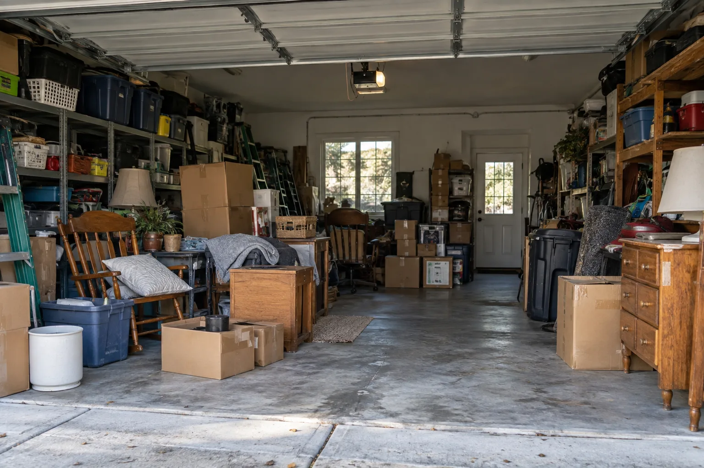

Salt Lake City to Provo, Utah
Junk removal
for your home.
Start with a photo of what you want gone. We’ll talk through the items, access, and timing with you.
Tell us about your job
Household junk
Boxes that never got unpacked. Belongings you no longer use. The corner of a room that keeps collecting more stuff.
Set aside what you want to keep, then send a photo of the rest together. Tell us where it is and flag anything especially heavy. If the pile changes before pickup, let us know so we can confirm the scope.
Furniture & bulky items
For a sofa, table, bed frame, or another large piece, send a photo and approximate dimensions. Mention stairs, tight hallways, elevators, or anything that needs to come apart.
You don’t need to move a heavy item just to ask for a quote. Explain where it is and ask what preparation your pickup would need.
Ask about furniture removalStart with the whole picture.
A wide photo from the doorway tells us more than a close-up of each box. Add a closer shot of anything that is hard to see, and separate the tools and belongings you want to keep.
Paint, chemicals, batteries, appliances, and unusually heavy materials need a separate conversation. Include them in your inquiry so acceptance can be confirmed before making arrangements.
Before you book
Let’s talk price.
A useful quote starts with what needs to go, how much there is, and the access to it. Share your city, photos, and any stairs or parking restrictions.
Ask for the total price and what it covers before you agree to a pickup. Each job needs to be discussed directly.
See our Salt Lake City–Provo service areaReady to clear some space?
Send your location and photos to discuss a removal quote.